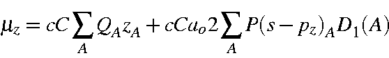
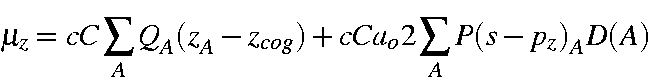
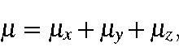

MOPAC uses the IUPAC chemistry convention to define the direction of the dipole, as being from the negative to the positive center, see: http://goldbook.iupac.org/html/E/E01929.html This is the same convention as that used in Gaussian, and is the opposite of the physics convention.
For neutral systems, the dipole moment is calculated from the atomic charges and the lone-pairs as



Where c = speed of light, C = charge on the electron, and ao = Bohr radius, or cC = 2.99792458*1.60217733 = 4.8032066, and cCa02 = 2.99792458*1.60217733 = 4.8032066*0.529177249*2.0 = 5.0834948.. D1(A) is defined elsewhere.
Conversion factors between Dipole units
| Quantity | Dipole as | Factor (units) | Factor(value) | System |
| 1 electron*1 Angstrom | Debye (D) | cC | 4.80320 | esu |
| 1 Debye (D) | Dipole Length (m) | 1/(cC) | 2.0819*10-11 | SI |
1 statvolt = 299.79 volts = c*10-6 volts (c in m/s)
Formally, the dipole moment for an ion is undefined; however, it is convenient to set up a 'working definition.' Consider a heteronuclear diatomic ion in a uniform electric field. The ion will accelerate. To compensate for this, it is convenient to consider the ion in an accelerating frame of reference. The ion will experience a torque which acts about the center of mass, in a manner similar to that of a polar molecule. This allows us to define the dipole of an ion as the dipole the system would exhibit while accelerating in a uniform electric field. To formalize this definition:





and ycog and zcog have similar definitions. This general expression will work for all discrete species, charged and uncharged, and is rotation and position invariant.